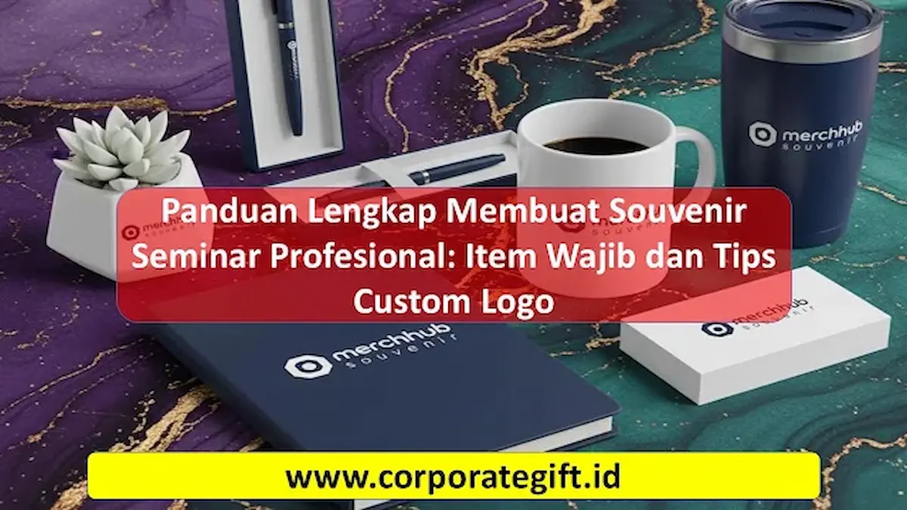

Corporate Gifts ID - Souvenir seminar profesional adalah barang custom logo seperti tote bag, tumbler, notebook, dan ID card lanyard yang diberikan penyelenggara kepada peserta sebagai simbol apresiasi sekaligus media promosi jangka panjang. Pemilihan item yang fungsional, desain minimalis, dan kualitas cetakan logo yang baik akan membuat souvenir lebih berkesan dan memperkuat citra brand penyelenggara. Idealnya, souvenir dipesan 2-4 minggu sebelum acara agar produksi dan quality control berjalan maksimal.
Poin Kunci Panduan Souvenir Seminar:
- Fungsi Ganda: Berperan ganda sebagai bentuk penghargaan peserta dan media promosi jangka panjang dengan brand recall yang tinggi.
- Item Esensial: Kombinasi fungsional mencakup tote bag kanvas, tumbler stainless SUS 304, notebook agenda spiral, pulpen metal, dan tali lanyard.
- Teknik Custom Logo: Pilihan sablon presisi, UV print full color, atau laser engraving permanen yang elegan.
- Timeline Terencana: Pemesanan ideal dilakukan 2 hingga 4 minggu sebelum acara untuk menjamin akurasi sampel dan kelancaran logistik.
Mengapa Souvenir Seminar Penting?
Souvenir berfungsi sebagai simbol penghargaan nyata dari pihak penyelenggara kepada peserta yang telah meluangkan waktu dan komitmen untuk hadir. Namun lebih dari sekadar tanda terima kasih, souvenir seminar yang memiliki nilai kegunaan tinggi akan terus dipakai dalam aktivitas harian peserta, baik di tempat kerja, kampus, maupun saat mobilitas luar ruangan.
Ketika peserta menggunakan barang tersebut secara berulang, logo dan identitas instansi penyelenggara akan selalu terlihat. Hal ini menciptakan eksposur merek yang konsisten tanpa biaya iklan tambahan. Inilah alasan mendasar mengapa pemilihan paket seminar kit dan souvenir seminar harus dirancang secara cermat, berbobot, serta relevan dengan tema acara.

Ragam item souvenir seminar kit premium seperti tumbler custom, notebook agenda, dan pulpen berlogo instansi.
Item Wajib dalam Souvenir Seminar Profesional
Agar paket seminar kit memiliki nilai fungsional maksimal dan tidak berakhir menjadi barang yang diabaikan, berikut adalah kurasi item wajib yang paling direkomendasikan untuk event korporat dan simposium:
- Tote Bag Custom: Ringkas, berdaya tampung luas, dan praktis untuk memuat seluruh perlengkapan seminar. Tote bag berbahan kanvas premium atau blacu dengan sablon logo acara memberikan kesan rapi serta mendukung konsep ramah lingkungan.
- Tumbler atau Botol Minum Stainless: Selain mendukung kampanye bebas plastik sekali pakai, tumbler vacuum insulated berbahan food grade SUS 304 merupakan item favorit yang digunakan peserta setiap hari di meja kerja mereka.
- Notebook Agenda dan Pulpen Metal: Perlengkapan esensial seminar untuk mencatat materi penting selama sesi berlangsung. Notebook custom dengan cover elegan dan pulpen berukir laser logo perusahaan menghadirkan sentuhan personalisasi mewah.
- ID Card dan Tali Lanyard Printing: Berfungsi ganda sebagai tanda pengenal resmi selama acara serta kenang-kenangan eksklusif yang sering disimpan oleh peserta setelah event selesai.
- Flashdisk Kartu Custom: Media digital praktis berkapasitas besar untuk membagikan materi presentasi, modul pelatihan, dan e-certificate kepada seluruh peserta secara modern.
Tips Custom Logo agar Souvenir Lebih Profesional
Kualitas kustomisasi logo merupakan faktor penentu apakah souvenir terlihat mewah atau justru terkesan murahan. Berikut 4 langkah strategis dalam mengaplikasikan logo instansi:
- Gunakan Desain Minimalis: Hindari menempatkan logo yang terlalu besar atau teks yang terlalu padat. Penempatan logo berukuran proporsional dengan negative space yang cukup justru memberikan kesan profesional, modern, dan bernilai estetika tinggi.
- Pilih Warna yang Selaras: Pastikan kombinasi warna logo kontras dengan warna dasar material produk namun tetap mengikuti pedoman brand guideline resmi perusahaan.
- Gunakan Metode Cetak Berkualitas: Pilihlah teknik cetak yang tepat sesuai jenis permukaan material, misalnya laser grafir untuk media metal atau sablon presisi untuk bahan kain tekstil.
- Sertakan Pesan Singkat atau Tagline Acara: Tambahkan kutipan inspiratif bertema seminar atau tagline acara berukuran kecil untuk memperkuat memori peserta terhadap event tersebut.
Perbandingan Metode Cetak Logo pada Souvenir Seminar
Memilih teknik cetak yang tepat sangat menentukan daya tahan serta estetika tampilan akhir souvenir. Berikut tabel perbandingan metode cetak yang umum digunakan:
| Metode Cetak | Cocok untuk Material | Kelebihan Utama | Daya Tahan |
|---|---|---|---|
| Sablon Manual / Presisi | Kain kanvas, blacu, spunbond, plastik | Biaya ekonomis untuk produksi massal, warna solid | Tinggi (tahan cuci) |
| Digital UV Printing | Plastik ABS, akrilik, kayu, metal flat | Mendukung gradasi full color dan tekstur timbul | Sangat Tinggi (anti gores) |
| Laser Engraving (Grafir) | Stainless steel, aluminium, bambu, kayu solid | Tampilan premium, mewah, presisi tinggi tanpa tinta | Permanen seumur hidup |
| Deboss / Emboss Kulit | Kulit sintetis PU, leatherette cover agenda | Efek cekung timbul elegan dengan sentuhan klasik | Permanen |
Kesimpulan
Souvenir seminar profesional dengan custom logo bukan hanya sekadar pelengkap seremonial kegiatan, melainkan investasi strategis dalam membangun brand awareness, mempererat relasi dengan peserta, dan mencerminkan kredibilitas institusi penyelenggara.
Dengan memilih item yang fungsional, menerapkan desain yang tepat, serta mempercayakan proses produksi kepada vendor souvenir seminar terpercaya, acara Anda akan meninggalkan kesan positif yang mendalam dan berkelanjutan.